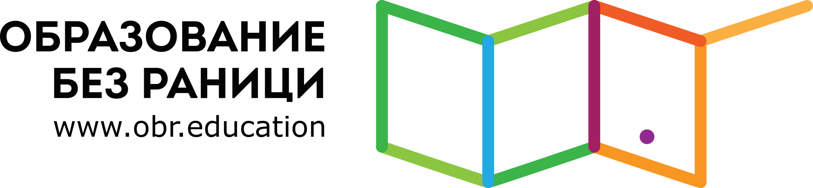

🥽 История в 3D за Google Cardboard
Това е разходка за разглеждане. Задачите с точки са в обикновената версия на урока.
- Натисни Започни и сложи телефона в очилата, легнал настрани.
- Оглеждай се с глава. В средата на погледа има малко кръгче.
- Задръж кръгчето върху жълта табелка с име на място (или натисни бутона на очилата) — отиваш дотам и се показва обяснение.
- Погледни земята и натисни бутона — отиваш на това място.
Ако ти се завие свят, свали очилата и си почини. Разглеждай седнал на въртящ се стол или прав, на свободно място.
← Към обикновената версия Подкрепи „Образование без раници“